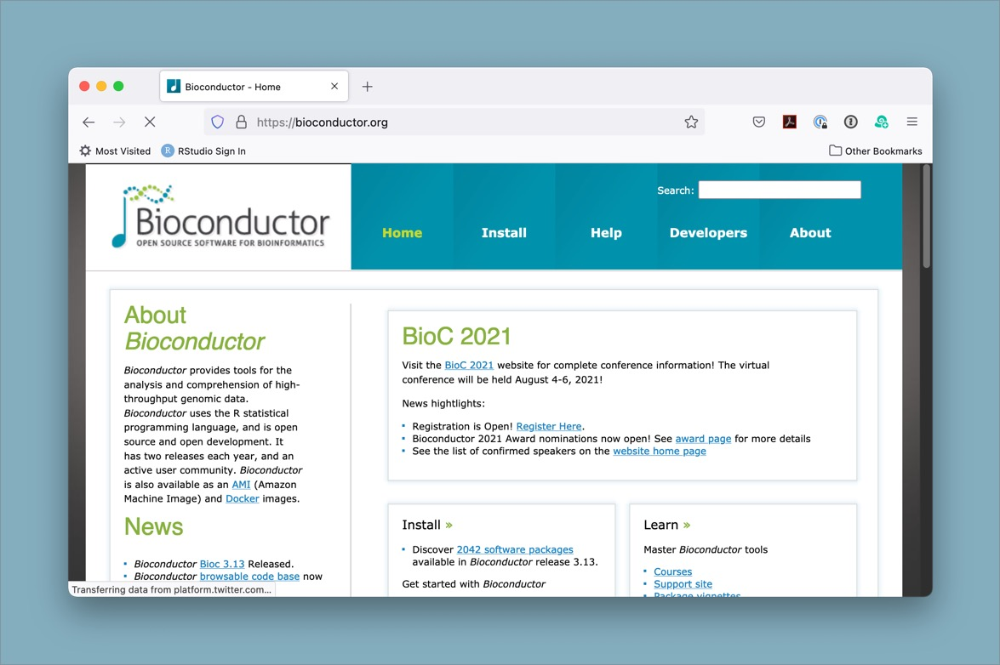
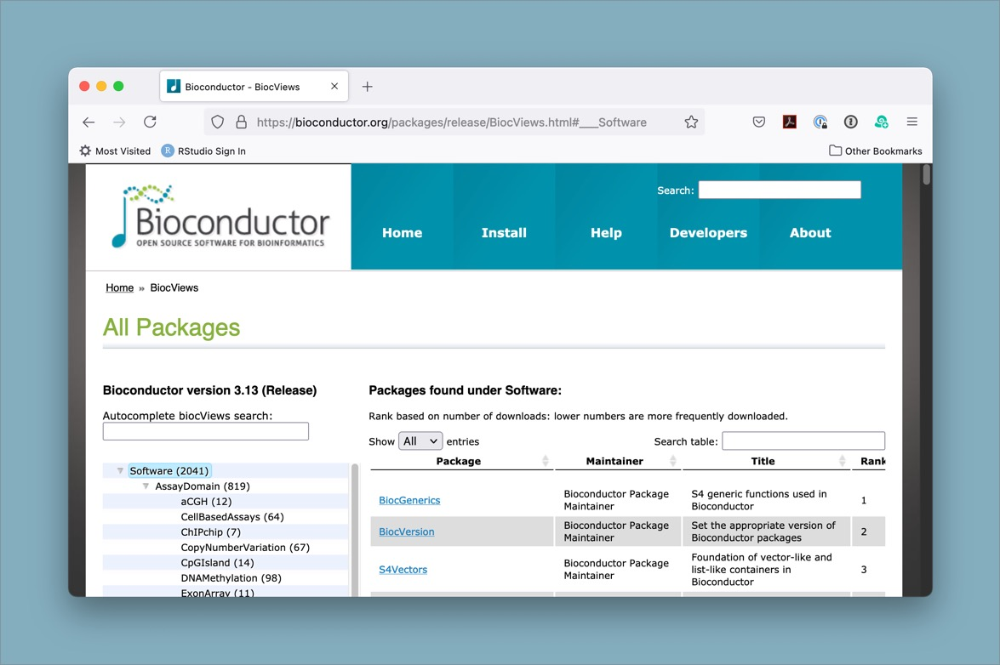

In some cases, you may want to use a specialized package that is not hosted on CRAN (the Comprehensive R Archive Network). This may be because the package is so new that it hasn’t yet been submitted to CRAN, or it could be that it is on a focal topic that has an alternative repository. One major example of an alternative repository source is Bioconductor, which has a mission of “promot[ing] the statistical analysis and comprehension of current and emerging high-throughput biological assays.” This means that many if not all of the packages available on Bioconductor are focused on the analysis of biological data, and that it can be a great place to look for tools to help you analyze your -omics datasets!
Since access to the Bioconductor repository is not built in to base R ‘out of the box’, there are a couple steps needed to install packages from this alternative source. We will work through the steps (only 2!) to install a package to help with the VCF analysis we are working on, but you can use the same approach to install any of the many thousands of available packages.

BiocManager packageThe first step is to install a package that is on CRAN,
BiocManager. This package will allow us to use it to
install packages from Bioconductor. You can think of Bioconductor kind
of like an alternative app store for your phone, except instead of apps
you are installing packages, and instead of your phone it’s your local R
package library.
# install the BiocManager from CRAN using the base R install.packages() function
install.packages("BiocManager")To check if this worked (and also so you can make a note of the
version for reproducibility purposes), you can run
BiocManager::version() and it should give you the version
number.
# to make sure it worked, check the version
BiocManager::version()BiocManagerThe following command is how you would install the
DESeq2 package. Since it is already installed on the
instance in preparation for the RNA-seq Demystified Workshop, we will
not install it.
BiocManager::install("DESeq2")Note, many packages have dependencies which also get installed along the way. The R console prints out the status of the installation in case of errors.
Note: Installing packages from Bioconductor vs from CRAN
Some packages are only available on CRAN, others only on Bioconductor. Many Bioconductor packages have dependencies that are in CRAN.
BiocManager::install()will install packages from CRAN and Bioconductor (it is a wrapper aroundinstall.packages()that adds some extra features). There are other benefits to usingBiocManager::install()for Bioconductor packages, many of which are outlined here. In short, Bioconductor packages have a release cycle that is different from CRAN and theinstall()function is aware of that difference, so it helps to keep package versions in line with one another in a way that doesn’t generally happen with the base Rinstall.packages().
While this workshop series focuses on differential expression analysis of RNA-seq data, there are many different types of data and analyses that bioinformaticians may want to work with. Sometimes you may get a new dataset and not know exactly where to start with analyzing or visualizing it. The Bioconductor package search view can be a great way to browse through the packages that are available.

Tip: Searching for packages on the Bioconductor website
There are several thousand packages available through the Bioconductor website. It can be a bit of a challenge to find what you want, but one helpful resource is the package search page.